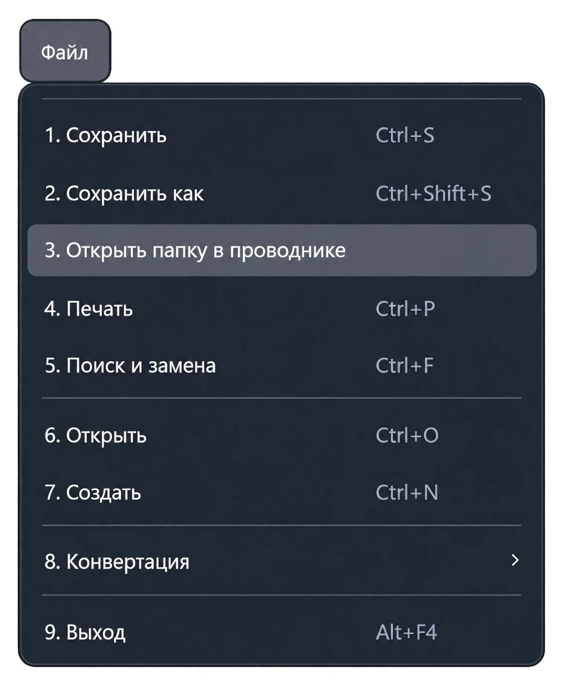

Функция "Открыть папку в проводнике"
Данная функция открывает корневую папку нашего файла
ВНИМАНИЕ: данная кнопка доступна только когда открыт хотя бы один текстовый редактор!
Путь и вызов
- Нахождение в программе
- Верхнее меню → "Файл" → "Открыть папку в проводнике"
- Горячие клавиши
- Отсутствует.
На изображении показано нахождение данной функции в программе:

Действия после нажатия
После нажатия горячих клавиш или ЛКМ по кнопке "Открыть папку в проводнике" файловый менеджере ОС откроет папку, в которой сейчас находится файл.